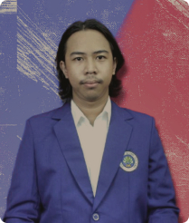

About me


Nanda Satria Putra
UI/UX Designer & Animator
I am a student Animation at the State University of Malang. I am very interested in the world of visual graphics, both Graphic Design, UI/UX and Animation. I always try to be a better person than before to be a useful person and always want to learn new things and gain as much experience as possible.